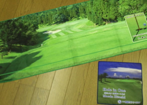
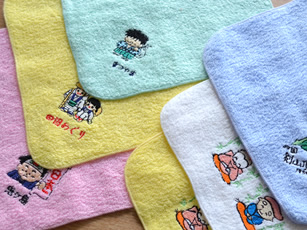
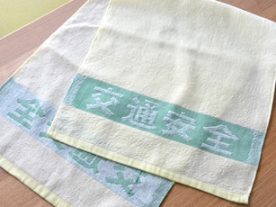
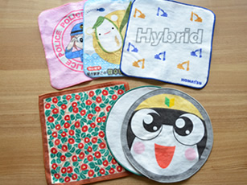

IMABARI TOWEL ／ SINCE 1960
名入れタオル・オリジナルタオルのご相談は、
今治のタオル産地 正岡商店へ
タオル工場・染色工場・プリント工場・縫製工場・刺繍工場が集まる日本一のタオル生産地、今治。正岡商店はこの産地で、お客様のニーズに応えるタオルをスピーディに、最適な方法で生産・提供しています。ご相談内容に応じて、ご要望に合ったタオルをご提案します。
正岡商店が選ばれる理由
今治の産地で製造
多様な工場が集まる今治で、タオル製品の製造・名入れ・オリジナルタオルを手がけています。
目的と数量で方式を選べる
デザイン・用途・枚数に合わせて、最適なプリント・加工方法をご提案します。
1枚から量産まで
1枚から作れるインクジェットプリントから、型を使う量産向けのプリントまで対応します。
織り・刺繍・特殊プリント
ジャガード織り・刺繍・写真を織り込むタオルや、水やお湯で変化する特殊プリントも承ります。
プリント・加工の種類
デザインや数量、ご予算に合わせてお選びいただけます。どの方式が合うか分からない場合も、お気軽にご相談ください。
インクジェット顔料プリント
タオル・日本手ぬぐいに直接顔料プリント。1枚から作成でき、30枚ぐらいまでは型を作るより割安です。何色使っても型代は不要です。
写真製版顔料プリント
写真を4色に分解して型を作り、重ねてプリントします。指定色は特色を追加できます。型代は通常の1.5倍ですが、数量が多い場合や、バスタオルなどプリント面積が広い場合はインクジェットより安くなります。プリントはタオルの端にかからない内側のみです。
昇華転写プリント
ポリエステル100%のマイクロファイバー生地に染料を封じ込め、絵画・イラスト・写真も鮮明に表現します。綿のタオルには使えません。表マイクロファイバー／裏綿パイルの生地もあります。
インクジェット染料プリント
フルカラーで細部まで表現します。型代が不要なため、少数ならシルクプリントより安くなります。反物にプリントしてカットするため、周囲はメロウミシン仕上げです。
染料／顔料プリント（シルクスクリーン）
型を通して柄を染め、後処理で色を固定します。プリントが端にかかると全面プリントとなり、プリント代・型代とも高くなります。細かい柄はデザインに注意が必要です。
印刷タオル
白タオルやカラータオルの平織り部分の片側または両側に、1色で印刷します。
おぼろ捺染タオル（オボロタオル）
特殊な横糸を使い、横糸だけに着色して文字や柄を表します。
ジャガード織りタオル
パイルの上げ落ちで文字や柄を出し、横糸に色糸を使って文字の部分や全体に変化をつけます。
ジャガード織り染めタオル
パイルの上げ落ちで柄を出してから染色します。単価・型代は、デザインの大きさや染め色・濃度によって変わります。
毛違いジャガード織りタオル
主に2色の糸で柄を表し、表と裏の配色が逆になります。線の太さは2〜3mm必要です。工場在庫の糸色なら小ロットから織れます。
朱子織りタオル
横糸で柄を表し、刺繍のように小さな文字や柄を表現できます。主にタオルの両端（ヘム）などに横方向に織り込みます。
刺繍タオル
刺繍の型を作り、デザイン通りに刺繍します。針数はデザインの大きさや内容で変わり（日本語はローマ字より多め）、型代・単価もそれに応じて変わります。ベースのタオルはいろいろ選べます。
ミラクルプリントタオル（マジックプリントタオル）
水に反応する染料でプリントします。水につけると、カラータオルの表面に白い文字やデザインが浮かび上がります。
不思議なタオル（温感プリントタオル）
お風呂のお湯に浸けると絵が変わります。綿100%（日本製）です。
プレス（圧縮）タオル
タオルをいろいろな形に圧縮します。水につけるか手でほぐすと、元のタオルに戻ります。
日本手ぬぐい
顔料プリントと注染があります。顔料プリントは細かな柄が出せ、裏までは抜けません。注染は裏まで染まりますが、柄や色に制限があります。
タオルハンカチ
プリント生地を在庫しており、300枚から製作できます。約20×20cm、直径21cmの円形、約25×25cm、約25×30cm、表ガーゼ、2色毛違いジャガード織りがあります。在庫生地を使った刺繍入りは100枚からです。
※このほか、写真・CG画像・文字を織り込む「美写紋タオル」、パイルの上げ落ちでロゴを表す「織り姫タオル」なども承ります。
製品例
これまでに手がけてきたタオルの一部です（御社サイト掲載の製品画像より）。




※写真は御社サイトに掲載されている製品画像を、提案用に引用させていただいています。
目的別の選び方
少ない枚数でノベルティを作りたい
インクジェット顔料プリント 1枚から作成でき、何色使っても型代は不要です。
写真を鮮明に表現したい
写真製版顔料プリント／昇華転写プリント 写真を4色に分解してプリントする方法と、マイクロファイバー生地に鮮明に定着させる方法があります。
記念品に高級感を持たせたい
美写紋タオル／ジャガード織り／刺繍タオル 織りや刺繍で表すため、プリントのように色落ちを気にせず使えます（美写紋）。
水やお湯で変化する演出をしたい
ミラクルプリントタオル／不思議なタオル 水につけると文字が浮かぶタオル、お湯で絵が変わるタオルがあります。
定番サイズ（タオル生地）
定番プリント生地のサイズです。
| 品目 | 目方 | パイル | サイズ | 生産国 |
|---|---|---|---|---|
| シャーリングハンドタオル | 140匁 | 30/2 | 約34×37cm | 中国 |
| シャーリングフェイスタオル | 260匁 | 20/1 | 約34×88cm | 中国 |
| 300匁 | 30/2 | 約34×88cm | 中国 | |
| 320匁 | 30/2 | 約34×85cm | 中国 | |
| 330匁（織り） | 30/2 | 約34×88cm | 日本 | |
| シャーリングマフラー | 260匁 | 20/1 | 約20×113cm | 中国 |
| 280匁 | 30/2 | 約20×113cm | 中国 | |
| 300匁 | 30/2 | 約21×110cm | 中国 | |
| 330匁（織り） | 30/2 | 約20×115cm | 日本 | |
| シャーリングスポーツタオル | 500匁 | 20/1 | 約40×115cm | 中国 |
| 550匁 | 30/2 | 約40×115cm | 中国 | |
| 630匁（織り） | 30/2 | 約40×115cm | 日本 | |
| シャーリングバスタオル | 850匁 | 30/2 | 約60×120cm | 中国 |
| 1000匁（織り） | 30/2 | 約60×125cm | 日本 | |
| 大判シャーリングバスタオル | 1200匁 | 20/1 | 約82×156cm | 中国 |
※スマートフォンでは表を横にスクロールしてご覧ください。
今治タオル関連
今治白いタオル、今治エコタオル、すごいタオル、OHTタオル、サンホーキン綿糸使用ホテル向け高級タオル
Made in Imabari
やさしいぬくもりタオルマフラー、アメリカンシャーリングカラータオル、MSカラーシャーリングタオル
会社概要
| 社名 | 正岡商店（タオルショップまさおか） |
|---|---|
| 創業 | 昭和35年（1960年） |
| 従業員数 | 9人 |
| 代表者 | 正岡 政範 |
| 事業内容 | タオル製品製造、販売、名入、オリジナルタオル、マイクロファイバークロス、日本てぬぐい、風呂敷、名入れ軍手 |
| 事務所 | 〒794-0026 愛媛県今治市別宮町1丁目1-14 Tel 0898-22-5612／Fax 0898-32-3702 |
| 配送部・企画部 | 愛媛県今治市四村福田270-5 配送部 Tel 0898-22-5047 企画部 Tel 0898-22-5057 Fax 0898-22-5152 |
| 取引銀行 | 伊予銀行 今治支店 百十四銀行 今治支店 |
サンプル・お見積りのご相談
オリジナルタオル・名入れタオルのご相談は、お電話またはお問い合わせフォームからどうぞ。デザインや枚数、用途をお聞かせいただければ、内容に合ったタオルとプリント・加工方法をご提案します。